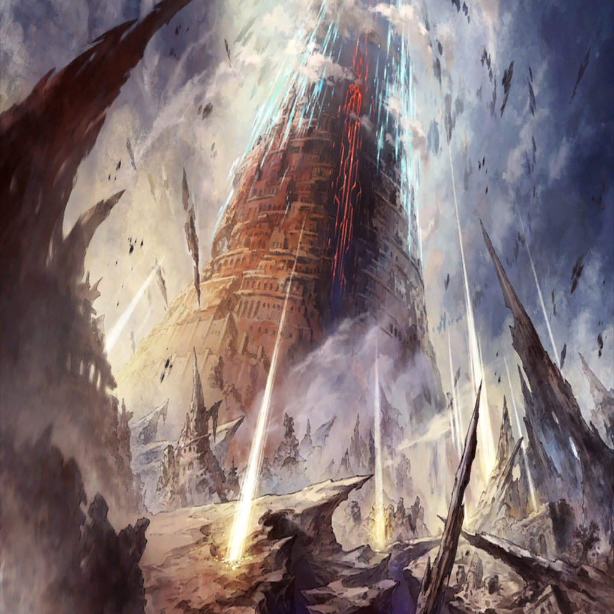

|
|  |

Holy Guard Knight A |
Wh-what is that?! |
| Holy Guard Knight B |
A tower of light?! Is that the legendary Tower of Babel?! |

Greed Dike Soldier |
That must be the legendary tower His Excellency has done all this for. |
| ??? |
Finally, the time has come. |

Waginau |
Now, my friend, descend before us! |

Kanon |
Haa... Haa... |
Kanon |
Th-this is...?! |
| ??? |
Glorious, isn't it? This is the legendary tower sought by the most powerful people in this world. |
Kanon |
Wha—?! |

Orion |
Before you stands the ancient herald of the greatest of alchemists, the true form of the Tower of Babel! |
Kanon |
Orion! |
Orion |
You should be honored to be present at this historic moment, Lord Commander. |
Orion |
The glow of divinity... The Alchemy Source awaits me at the end of this light. |
Kanon |
Don't you understand that what you're doing could destroy this world?! |
Orion |
Of course. None who are without power will be left alive. |
Kanon |
Why, you...! |
Orion |
If everything will come to an end, then so be it. I will be the founder of a new nation built on the ashes of the old. |
Kanon |
So survival of the fittest is the code you will enforce upon this world? You're no different from Sol! |
Orion |
Sol? Hmph, I should be offended to be seen in the same light as that whelp. Still, I will concede that he and I may seem the same to those who can only comprehend the superficial process of restructuring the world. |
Orion |
From ancient times to the present, humans have evolved and their civilizations have made spectacular advances to follow suit. |
Orion |
Yet, even after such advances, humans continue to fight amongst each other. Why do you think that is? |
Kanon |
Are you trying to say it's because our civilization is not grounded in the "survival of the fittest" ideal? |
Orion |
Exactly. The sinfully proud notion that the weak must be treated as equals of the strong is what causes all of the tragedy in this world. |
Orion |
There will always be strife without clear, incontestable differentiation between the weak and the strong! |
Kanon |
How can you believe that?! A world where people are segregated can only cause more conflict! Isn't that obvious?! |
Orion |
You are wrong. Those with true power will lead and those without will follow. This structure, if enforced properly, will leave no room for conflict to arise. |
Orion |
If that whelp was advocating for such a world, then he had the right idea. |
Kanon |
Is that truly your ideal world? |
Orion |
The world I dream of lies beyond anything that whelp was able to imagine. |
Kanon |
Beyond...? What do you mean? |
Orion |
I dream of a world in which we have overthrown the gods and freed ourselves of their rule. |
Kanon |
The gods?! |
| ??? |
Nnrgh... |
Orion |
You still live? You are not as weak as I expected. |
Kanon |
Huh? |
Kanon |
Captain Kudan! |

Kudanstein |
Ugh... Wh-why are you here?! I-I told you...n-not to follow me! |
Kanon |
I'll do as I please! Let go of Captain Kudan! |
Kudanstein |
N-no... Stay back. He's...out of your league. |
Kanon |
I'm well aware of that! I met him in the palace and saw his power for myself! |
Orion |
Does this Lord Commander have difficulty learning? |
Orion |
Can you not see it was such foolish bravado that resulted in the death of Cadanova, the Flame Dragon King? |
Kanon |
You're wrong! It was Captain Cadanova who taught me that a strong heart is the most powerful weapon one can have in times of distress! |
Kanon |
I believe he is watching over me now, and I know it was his teachings that got me through the fight against Sol! |
Orion |
Hmph. I take it your overconfidence comes from your luck in defeating that whelp. |
Orion |
I must say, if you were having trouble with him, then you will certainly be outmatched here. |
Kanon |
What are you trying to say?! |
Kanon |
Sol said you might equal his strength after getting your hands on the Alchemy Source. |
Orion |
An equal? To him? Is that what the whelp thought? Hahahahaha! |
Kanon |
What's so funny? |
Kanon |
The only reason you could best Captain Kudan is due to his wounds from the battle against the Templars! |
Kanon |
If we were to fight you together—! |
Kudanstein |
I-it wouldn't make a d-difference...if I were at f-full strength. |
Kanon |
What? |
Kudanstein |
I-I'm telling you! Leave! Th-this man is f-far beyond your level! |
Kanon |
Has he already attained Nimul's powers?! |
Kudanstein |
N-no! We simply underestimated...the caliber of those who are fit to be called...a Vessel of Reincarnation! |
Kanon |
What?! |
Orion |
Hahaha. "The only reason"? I am in no way overconfident of my strength. If I ever felt Sol would become a threat, I would have immediately moved to subjugate him. |
Kanon |
Do you mean you've always had power surpassing that of Sol?! |
Orion |
It looks like there's still some time until the manifestation of Nimul. Since you're here, perhaps you can provide me with a little entertainment. |